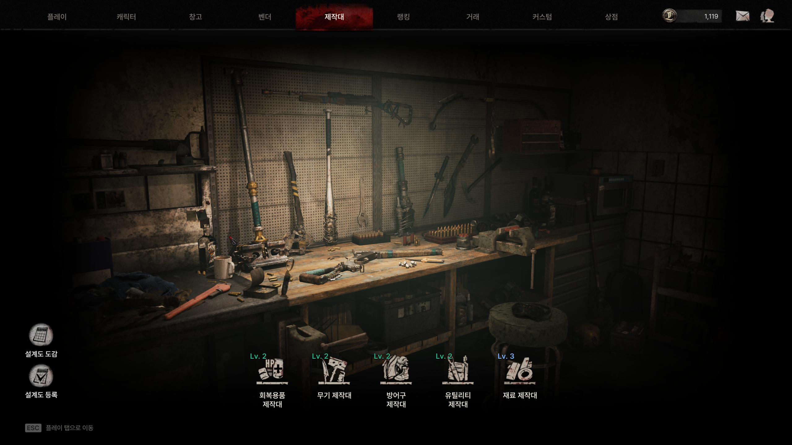
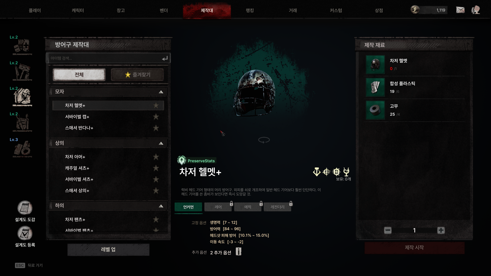
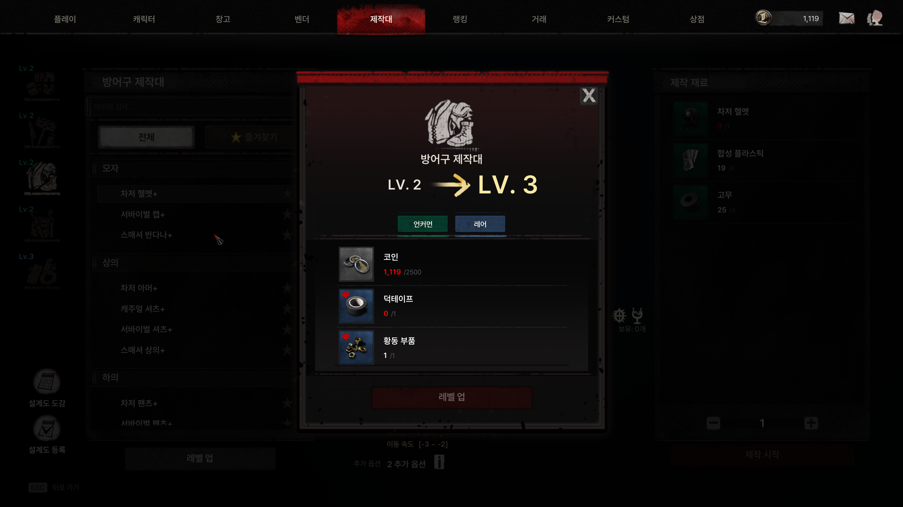
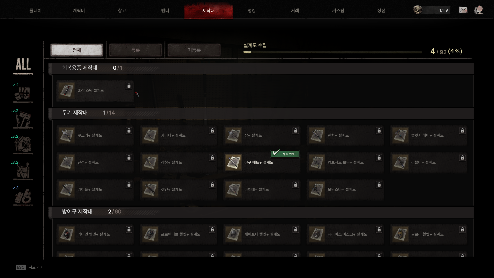

PORTFOLIO · AI PRODUCT PLANNING
모호한 요구사항을 정의하고, 기획 산출물을 동작하는 프로토타입으로 제작하는 기획자
11년간 게임 서비스(모바일, PC)를 기획했고, 최근에는 Claude Code로 기획 데이터 검증 툴과 로그 분석 툴을 직접 만들어 기획팀뿐 아니라 QA와 사업팀이 함께 쓰게 했습니다.
아래는 요청하신 두 가지, 개발이 참조할 기획 산출물과 AI 도구 활용 결과물을 제 실제 작업으로 정리한 것입니다.
공고와의 연결
요구하신 역량마다 제가 한 일과 해당 위치를 정리했습니다.
| 요구 역량 | 제가 한 일 | 위치 |
|---|---|---|
| 모호한 요구사항을 문제 정의, 기능, 프로세스, 데이터 구조로 구조화 | 제작대 리뉴얼에서 4가지 문제를 정의하고, 규칙, 화면 구조, 데이터 테이블 6종으로 구조화 | 1장 |
| 개발 참조용 기획 산출물 (PRD, 유저 스토리, 플로우, 정책 정의) | 사용자 스토리 6건과 수용 조건, 유저 플로우, 정책 표, 데이터 구조를 한 문서로 정리 | 1장 |
| 컨셉 합의용 인터랙티브 프로토타입 | 3단 레이아웃 제작 화면을 클릭해 볼 수 있는 프로토타입으로 먼저 검증하고, 결과를 문서에 개정 | 1장 |
| 생성형 AI 도구의 실제 업무 활용 | Claude Code로 데이터 검증, 로그 분석 툴과 자체 MCP 서버 2개를 만들어 팀이 함께 사용 | 2장 |
| AI 결과물의 정확성 검증 | 집계 오류와 데이터 착시를 발견하고 수정한 사례, 분석 결과의 한계를 명시한 사례 | 2장 |
| 기획, 개발, 디자인 조직과 요구사항 조율 | 직군 합동 TFT 구성, 일정 급변 시 우선순위 재조정, 장르 전환 과제 | 3장 |
| 출시 후 지표와 VOC 기반 개선 | 이탈 시점과 커뮤니티 반응을 보고 기획을 개정, 출시 시점에 로그 분석 툴 구축 | 1장 · 2장 |
| Markdown, 데이터 구조 이해 | 기획 문서와 작업 기록을 Markdown으로 관리하고, 데이터 흐름도(dbdiagram)로 테이블 관계를 설계 | 1장 |
| 교육, EdTech 도메인 | 직접 경험은 없습니다. 어떻게 접근할지 정리했습니다. | 4장 |
1. 기획 산출물: 제작대 리뉴얼 (PRD 형식)
PC 좀비 익스트랙션 FPS 「The Midnight Walkers」에서 제작(Craft) 시스템을 리뉴얼한 기획입니다. 실제 사내 기획서를 바탕으로 PRD 형식으로 다시 정리했고, 실제 수치와 사내 문서 링크 등 민감한 정보는 제외했습니다.
1.1 제 역할
기획 담당(기획팀 팀장)으로 문제 정의, 규칙과 데이터 테이블 설계, 화면 구조 기획, 클릭 가능한 프로토타입 제작, 다국어 텍스트 키 정리와 최종 목록 확정까지 문서와 프로토타입을 직접 작성했습니다.
1.2 배경과 문제 정의
| 해결하려던 문제 | 설계 방향 |
|---|---|
| 제작대가 아이템을 만드는 기능으로만 쓰여, 파밍과 성장을 이어주는 역할을 하지 못함 | 파밍 목적, 수집, 거래 요소를 결합하고, 제작대 자체가 잠금 해제와 레벨업으로 성장하는 구조로 개편 |
| 모든 장비를 직접 제작하는 구조라 인게임 파밍(획득)과 제작의 목적이 겹침 | "보유 장비 강화"로 전환해 파밍은 획득, 제작대는 강화로 역할을 분리 |
| 상위 장비를 목표로 삼을 장기 동기가 부족함 | 설계도 수집과 등록 시스템, 도감으로 장기 수집 목표 제공 |
| 시간 투자가 큰 콘텐츠를 캐릭터별로 나누면 여러 캐릭터를 플레이하는 장점이 오히려 단점이 됨 | 제작대 해금과 설계도 수집을 계정 단위로 공유 (게임 내 첫 계정 공유 사례) |
1.3 사용자 스토리와 수용 조건
-
스토리 1플레이어로서, 필요한 장비 종류에 맞는 제작대를 골라 쓰고 싶다.
- 수용 조건: 제작대는 5종(회복, 무기, 방어구, 유틸리티, 재료)이며, 어떤 제작대에 어떤 레시피가 속하는지는 데이터로 설정한다.
-
스토리 2플레이어로서, 재료를 모아 제작대를 해금하고 성장시켜 더 높은 등급의 장비를 만들고 싶다.
- 수용 조건: 초기에는 회복 제작대만 해금 상태이고 나머지는 재료를 모아 잠금 해제한다. 제작대는 Lv.1~5이며, 레벨이 오르면 제작 가능한 최대 등급이 확장되어 해당 등급 이하를 모두 제작할 수 있다.
-
스토리 3플레이어로서, 설계도를 얻으면 등록해 새 레시피를 계속 쓰고, 수집 현황을 한눈에 보고 싶다.
- 수용 조건: 설계도는 등록 시 인벤토리에서 소모되고 해당 레시피가 영구 해금된다. 도감은 전체, 등록, 미발견 탭으로 상태를 보여준다.
-
스토리 4플레이어로서, 제작을 기다리지 않고 바로 결과를 받고 싶다.
- 수용 조건: 제작은 대기열과 제작 시간 없이 즉시 완료되고, 결과물은 창고로 지급된다. 재화 비용 없이 아이템 재료만 사용하며, 즉시성은 2단계 연출(타격, 완성)로 보완한다.
-
스토리 5플레이어로서, 캐릭터를 바꿔도 제작대 해금과 설계도 수집 진행을 이어가고 싶다.
- 수용 조건: 제작대 해금과 설계도 수집은 계정 단위로 저장되어 같은 계정의 모든 캐릭터가 공유한다.
-
스토리 6플레이어로서, 해금이나 레벨업이 가능해졌을 때 놓치지 않고 알고 싶다.
- 수용 조건: 미등록 설계도, 해금 가능, 레벨업 가능 중 하나라도 해당하면 진입점에 알림(레드닷)을 표시한다.
1.4 유저 플로우
제작
성장
설계도
1.5 정책 정의
| 제작대 수 | 5종 (회복 / 무기 / 방어구 / 유틸리티 / 재료) |
| 초기 해금 | 회복 제작대만 기본 제공, 나머지는 재료를 모아 잠금 해제 |
| 최대 레벨 | Lv.5, 레벨이 오를수록 제작 가능한 최대 등급이 확장 |
| 제작 방식 | 즉시 제작 (대기열, 제작 시간 없음), 2단계 연출로 즉시성 보완 |
| 장비 재료 | 레시피당 1종 1개 사용, 스탯은 결과물에 항상 승계 |
| 설계도 | 등록 시 인벤토리에서 소모, 이후 해당 레시피 영구 해금 |
| 수령 위치 | 창고(Stash) 고정 지급 |
| 저장 범위 | 계정 단위 저장 (같은 계정의 모든 캐릭터가 공유) |
| 재화 비용 | 없음, 아이템 재료만으로 제작 |
1.6 데이터 구조
제작대의 정의, 성장, 레시피, 재료를 6개 테이블로 나눠 설계해, 레시피와 소속 제작대를 코드 수정 없이 데이터로 바꿀 수 있게 했습니다.
| 제작대 정의 | 제작대 종류, 초기 해금 여부, 최대 레벨 등 기본 정보 |
| 제작대 레벨 | 레벨별 요구 재료와 레벨업 시 확장되는 제작 가능 등급 |
| 제작 레시피 | 결과 아이템, 필요 재료(또는 설계도), 소속 제작대 |
| 통합 재료 | 잠금 해제, 레벨업, 제작에서 공통으로 쓰는 재료 묶음 (재화와 아이템 통합) |
| 재료 타입 열거형 | 재료가 재화인지 아이템인지 구분 |
| 공용 상수 | 재료 최대 종류 수 등 시스템 전역 설정값 |
1.7 의사결정 기록
| 단계 | 결정과 이유 |
|---|---|
| 초기 | 제작대별 레시피와 재료 구조를 설계하고, 클릭 가능한 프로토타입으로 3단 레이아웃 제작 화면을 먼저 검증 |
| 개정 | 등급 범위(최소~최대) 방식을 "해당 등급 이하 모두 제작 가능"한 단일 최대 등급 방식으로 단순화. UI 표기도 범위 텍스트에서 등급 색상 뱃지로 변경 |
| 개정 | 3D 아이템 프리뷰를 고정 앵글에서 마우스 드래그 회전이 가능하도록 변경하고 프로토타입에 반영 |
| 개정 | 상단 진입점의 알림(레드닷) 표시 조건을 3가지로 정의해 성장 가능 상태를 놓치지 않도록 보완 |
| 정리 | 기획서 전반의 다국어 텍스트 키를 전수 점검해 중복과 누락을 정리하고 최종 목록 확정 |
| 결정 | 해금과 설계도 수집은 시간 투자가 큰 콘텐츠라 캐릭터별로 나누면 여러 캐릭터를 플레이하는 장점이 단점이 된다고 판단해 계정 단위로 설계 |
1.8 컨셉 합의용 프로토타입
문서만으로 설명하기 어려운 3단 화면과 성장 흐름은 클릭해 볼 수 있는 프로토타입으로 보완했습니다. 개발 수준의 구현이 아니라 컨셉을 합의하기 위한 산출물이며, 직접 눌러 보며 규칙을 확인하고 위 개정에 반영했습니다.

제작대 선택 화면

제작 화면 (3단 레이아웃)

제작대 레벨업

설계도 도감
1.9 출시 후 결과
- 개편 이후 유저 평균 이탈 시점이 7일에서 18일로 늘어나 플레이 수명 증가로 이어짐
- 커뮤니티와 디스코드에서 "할 거리가 늘어 플레이 동기가 살아났다"는 반응을 확인해, 설계도 수집 요소가 의도대로 작동했다고 판단
- 모든 장비를 직접 제작하던 구조를 "보유 장비 강화"로 전환한 뒤 아이템 옵션의 가치가 올라가며 파밍 목적성이 더욱 뚜렷해짐
2. AI 도구 활용 결과물
사용한 도구는 주로 Claude Code입니다. 개인 생산성 도구로만 쓰지 않고, 기획팀이 함께 쓰는 데이터 검증과 로그 분석 도구를 만드는 데 썼습니다.
2.1 사례: 무엇을, 왜, 어떻게 썼고, 어떻게 검증했나
| 결과물 | 풀려던 문제 | AI 활용 방식 | 검증과 결과 |
|---|---|---|---|
| 제작대 인터랙티브 프로토타입 | 문서만으로 설명하기 어려운 3단 화면과 성장 흐름을 합의해야 함 | 클릭해 볼 수 있는 HTML 프로토타입을 AI로 제작 | 직접 눌러 보며 규칙을 확인하고, 3D 프리뷰 회전과 알림 조건 등을 문서에 개정 |
| 데이터 뷰어 | 아이템 이름이 3개 테이블을 거쳐 완성되는데, 참조가 끊기거나 문자열이 빠져도 겉으로는 티가 나지 않음 | 키 값 하나를 전체 테이블에서 한 번에 검색해 참조 체인을 보여주는 도구를 Claude Code로 제작 | 끊긴 참조, 문자열 누락, 미사용 데이터를 한 번에 확인. 데모에서는 의도적으로 넣은 오류 3건을 찾아내는 시나리오로 보여줌 |
| 거래 로그 뷰어 | OpenSearch 기본 대시보드로는 원하는 시각화에 한계가 있고, 기획자와 매니저도 로그를 쉽게 봐야 함 | 원시 로그를 경제 분석 대시보드로 바꾸는 도구를 Claude Code로 제작 | 개발 중 거래 등록 로그만 보면 안 팔린 매물이 최고가 순위에 섞이는 문제를 발견해, 거래 ID로 등록과 구매 로그를 매칭해 체결된 거래만 집계하도록 수정 |
| 전투 로그 뷰어 (무기 픽률, 승률) | 출시 후 무기 선택과 성능을 감이 아니라 로그로 보고 싶음 | 입장 로그와 킬 로그를 결합하고, 킬 로그에 없는 피해자의 무기는 입장 로그를 역추적해 집계하는 도구를 제작 | 데스가 보유 무기 전부에 잡히는 한계를 명시하고, 전체 평균을 기준선으로 삼아 상대 비교로만 해석. 표본이 적은 무기는 걸러서 봄 |
| 경제 대시보드 점검 | 대시보드의 집계가 실제 로그와 맞는지 확인이 필요함 | 집계 로직을 직접 점검 | 로그 필드 불일치로 코인 수입이 실제의 1/10로 과소 집계되던 문제를 발견하고 수정 |
2.2 AI를 쓰는 방식
맥락을 이어받는 작업
CLAUDE.md와 날짜별 세션 로그 구조를 도입해, 매 세션이 이전 작업의 맥락을 이어받게 했습니다. 작업의 기록과 재현이 가능해집니다.
Markdown세션 로그사내 문서와 코드에 연결
UE5 C++ 소스에서 Enum과 Struct를 조회하는 MCP 서버, 기획서를 검색하고 정합성을 검증하는 MCP 서버를 TypeScript로 직접 구현해, AI가 사내 코드와 문서까지 참조하게 했습니다.
MCPTypeScript반복 작업의 표준화
로그 뷰어를 손으로 4번 만든 뒤 공통 클래스로 추출하고, 슬래시 커맨드(스킬)로 자동 생성되게 했습니다. 세션 로그를 스스로 분석해 스킬 후보를 뽑는 스킬도 만들었습니다.
스킬화BaseLogViewerAI 없이도 도는 도구
Claude Code 세션 없이도 동작하는 Perforce diff 기반 QA 리포트 툴을 만들어, AI로 만든 도구가 AI 없이도 팀에서 쓰이는 단계까지 확장했습니다.
QAbat · PowerShell · Node3. 협업과 의사결정
기획서가 개발과 디자인이 작업할 수 있는 형태가 되도록 조율한 사례입니다.
근접 전투 시스템 전면 개편
"퀄리티를 올려야 한다"는 목표만 있고 해결책은 없는 상태에서 애니메이션과 클라이언트 담당자와 TFT를 구성해, 매일 문제와 해결 방향을 논의하고 매주 아이디어를 취합했습니다.
전체 규모에 압도되지 않도록 무기 하나를 먼저 완성해 작업량을 가늠한 뒤 전체로 확장했고, 마일스톤 안에 모든 무기 시스템을 고도화했습니다.
일정이 급변한 상황의 우선순위 조정
마일스톤이 확정된 상태에서 유저 피드백으로 일정 조정이 필요했을 때, 기획, 아트, 테크 각 파트의 실제 작업 가능 일정을 직접 확인했습니다.
PD와 우선순위를 정리하고 리드 회의를 소집해 일정을 재조정했으며, 큰 단위의 업무는 팀원에게 분배하고 작은 단위는 직접 맡아 유저 테스트에 필요한 결과물을 기한 안에 완성했습니다.
장르 전환 과제
협력사 요청으로 듀얼 패드 슈터를 TPS로 전환해야 했을 때, 핵심 인원으로 TFT를 꾸려 일주일 안에 방향을 정리했습니다.
완성도보다 재미가 있는지를 먼저 확인하는 방식으로 개발, 테스트, 피드백을 짧은 주기로 반복해 마일스톤 안에 전환을 완료했습니다.
업무를 받으면 진행하는 방식
요청한 사람과 목표를 먼저 명확히 맞춥니다. 이후 해결 방향을 2~3가지로 정리해 장단점과 추천안을 제시하고, 팀과 리드의 의견을 반영해 방향을 빠르게 확정합니다. 방향이 어긋난 채로 기획서를 끝까지 쓰면 팀 전체의 시간이 낭비되기 때문입니다.
4. 이 포지션에 대한 제 관점
교육 서비스와 에듀테크 도메인을 직접 경험한 적은 없습니다. 대신 11년간 게임 서비스에서 문제를 정의하고, 개발이 참조할 산출물로 구조화하고, 프로토타입으로 합의하고, 출시 후 지표와 반응으로 다시 개선하는 과정을 반복해 왔습니다. 이 방법은 도메인이 달라도 같다고 생각합니다.
학습자와 교육 현장의 요구는 PoC와 사용자 의견에서 가장 먼저 배우겠습니다. AI 도구는 새로운 도구가 나오면 직접 작업에 적용해 보고, 그 결과가 맞는지 검증하는 방식으로 익혀 왔고 앞으로도 같은 방식으로 이어가겠습니다.